A studio for
generative media.
One you own.
Node-graph Flow, a layered Image editor, print-ready Paper layout, and a Video timeline — one project, your own API keys, bought once.
Each workspace is a full tool on its own; AI is a choice, not a requirement.
That's the whole idea here: media made on your machine is yours. Keep it ⬇
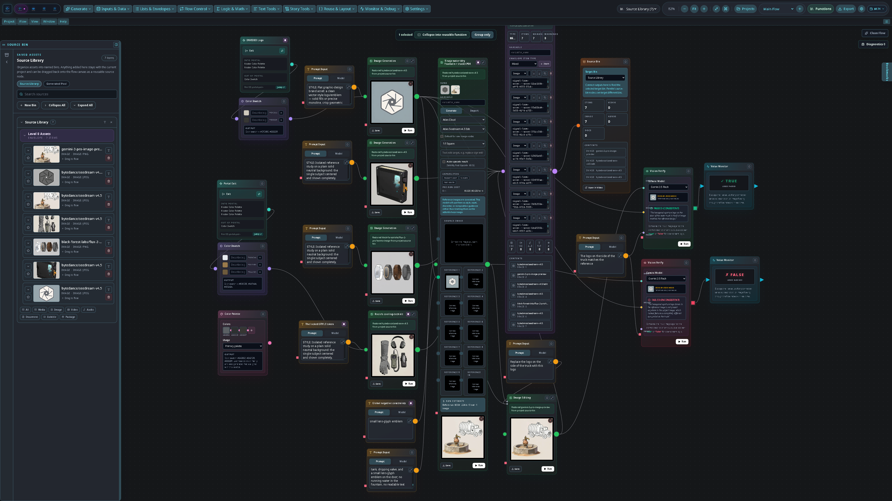
Four workspaces. One project.
Each workspace is a genuine standalone tool — Image and Paper even save their own file formats (.slimg, .slppr) — and the .sloom project is the umbrella that unites all four. Switch tools without switching files: a clip you generate in Flow appears in Image, Video, and Paper automatically, from one shared project and source library.
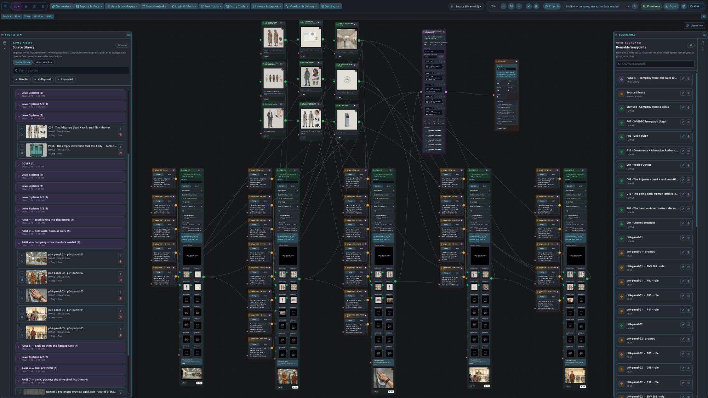
Built around Flow.
The generative node graph is what Signal Loom was designed around — wire providers into a graph once and every workspace downstream inherits the results.
AI is optional.
Paint in Image, lay out a book in Paper, cut in Video. Import your media or make it by hand — you can build an entire project with zero AI and zero keys.
Use one. Or all four.
Each workspace is powerful alone; together is where they shine. There's no single prescribed way to use Signal Loom.
Watch a node run.
A looping replay of the real Flow workflow, mocked in plain HTML — no video file. A sketch, a style reference, and a typed prompt get wired into Image Generation; the result is wired into an Envelope that already holds two assets, and lands in the shared Source Library the moment it arrives. (The reference thumbnails were generated with nano-banana over Vertex — the same call the app makes.)
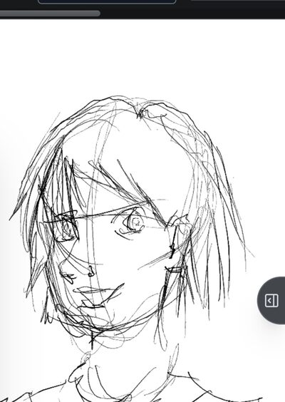
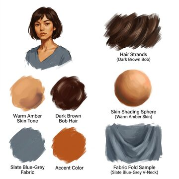
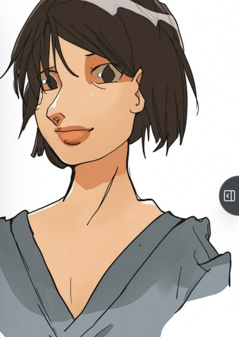
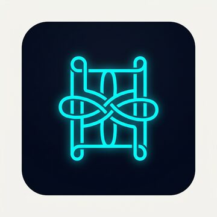
loom-logo.png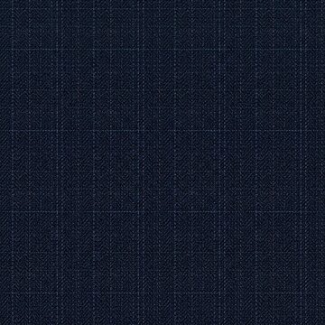
weave-tile.pngSculpt a comic page.
The Paper workspace, replayed: rule out panel frames, hold Ctrl to reveal vertex handles and drag an edge midpoint into a custom shape, set border weight and colour in millimetres, tint the page, and drop in a speech bubble with a draggable tail — Preflight keeps it print-ready.
Make it LOUD.
Paper's Comic SFX designer: eight presets — BANG!, KAPOW!, SCREECH, WHIRRRR, BOOM!, CRASH!, ZAP!, SLAM! — then every parameter is yours: fill, stroke and shadow measured in millimetres, skew and rotation, letter tracking, and trailing copies that sell the motion.
A brush that listens.
The Image workspace's brush engine, replayed with a simulated stylus: pressure drives size and flow, tilt shades like the side of the lead, Colour Rate mixes foreground into background mid-stroke, and Shift rules dead-straight lines — on the GPU brush engine (WebGL2, dirty-rect updates).
Cut it together.
The Video workspace, replayed with its real two-monitor layout: a clip from the Project Source Bin is previewed in the Source Monitor and sent to a lane with its V1 track chip, a second clip is dragged straight onto the Sequencer Timeline, a crossfade is built the real way — opacity keyframes, the first key dragged to 0% so the rubber-band line ramps V2 in over V1 — a score lands on the audio lane, and scale keyframes (◇) animate a push-in while the playhead scrubs the Program Monitor — playing two real Veo shots, the same character cut between two angles. (Shown in one of the app’s 20+ themes.)
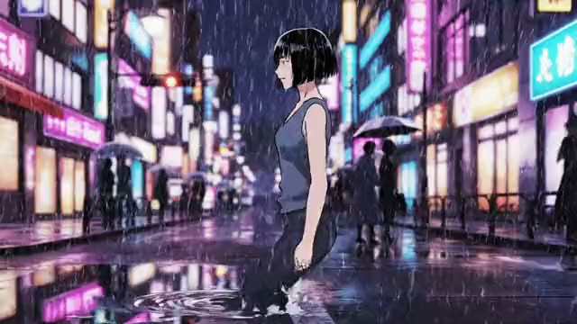
walk-wide.mp4V1V2V3V4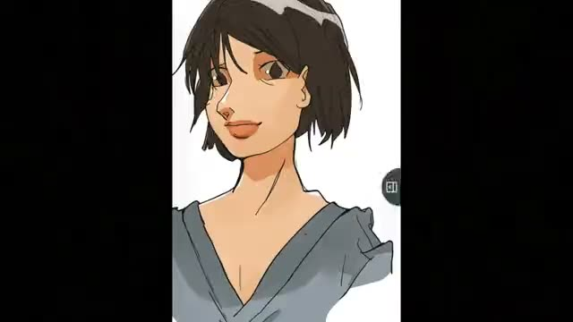
turn-cu.mp4V1V2V3V4Start with a consistency library.
The opening move of a project: a Flow graph that generates the low-level consistency assets — the recurring objects, props, and environments you reuse everywhere — so scenes stay visually consistent from shot to shot. It also tours most of the workspace.
Prompt and Color Palette / Swatch nodes drive Image Generation across four providers at once — Atlas (Seedream v4.5), BytePlus (bytedance/seedream), Google (gemini-3-pro-image) and Black Forest Labs (FLUX) — and the results collect into an Asset Package and the shared Source Library. Portals carry shared style and colour tokens across the graph; two Vision Verify nodes run a Gemini vision model to check each result against the reference (✓ TRUE / ✗ FALSE) into Value Monitors; and several nodes are collapsed to their minimal size while every connection stays wired.
Your providers. Your cost. Your control.
Signal Loom has no account and no servers of its own. You connect the AI providers you already pay for with your own keys — your keys and your work stay on your device, and you talk to the providers directly. And if you'd rather work without AI, skip this panel entirely: nothing else in the studio depends on it.
Generative fill image
Mask a region, describe the change, and edit with reference-guided models — billed to your own provider account.
Same model, any provider capability
Reference images and masks work wherever the model runs — through a direct key or a cloud gateway.
Local-first & private data
Projects are files you keep. No analytics. Nothing leaves your device except the request you choose to send.
Painted by hand. Finished by AI.
A full layered raster editor with a real pressure-, tilt-, and rotation-sensitive brush engine — then mask a region, describe the change, and let a model render it in place. One canvas does both.
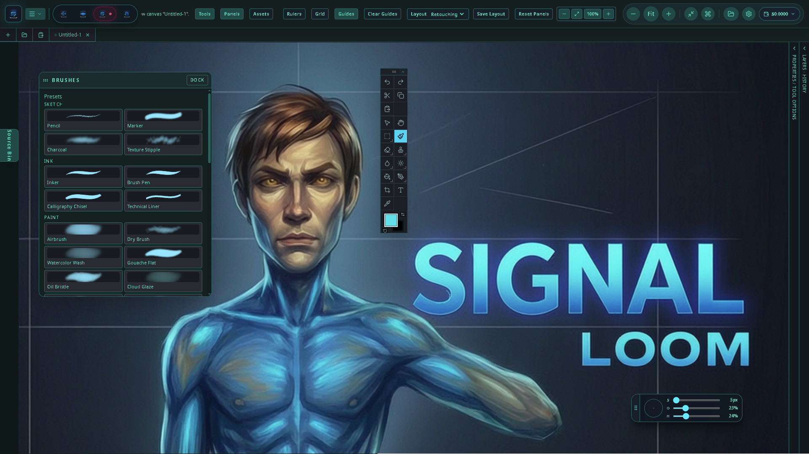
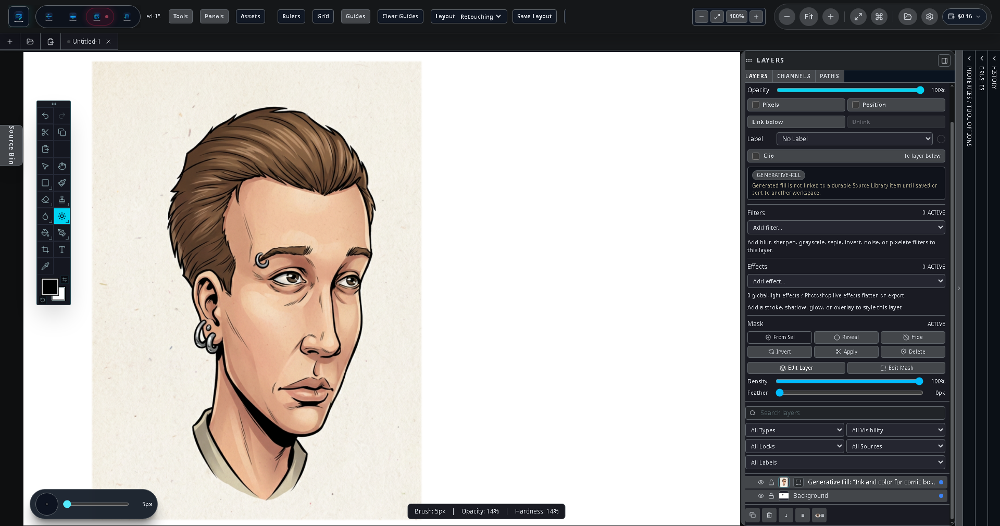
The whole studio, on Android & DeX.
The same project, the same four workspaces — touch- and S Pen-ready on a phone, a full desktop layout in Samsung DeX, and game-controller support for fast, eyes-up control.
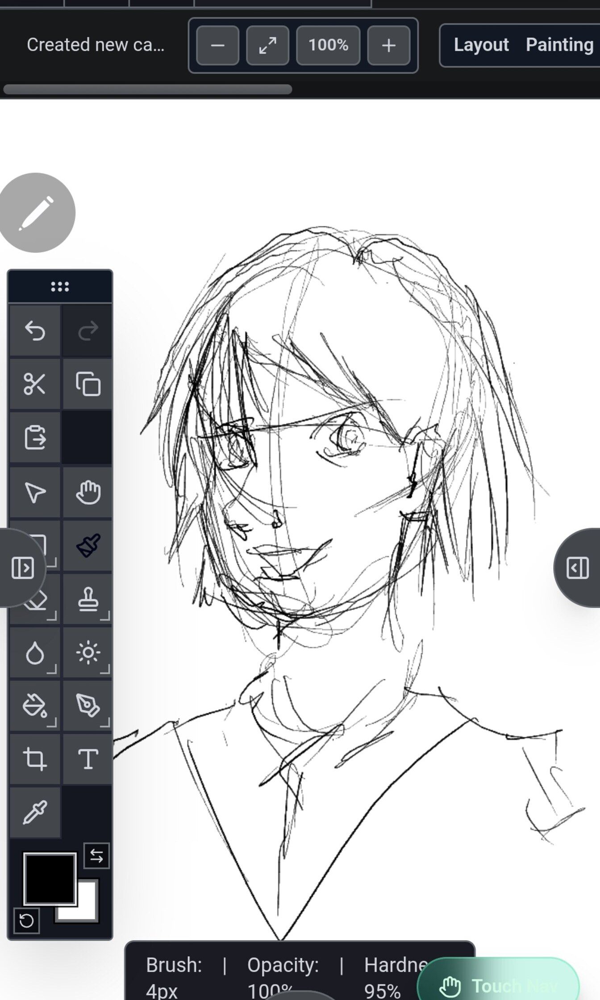
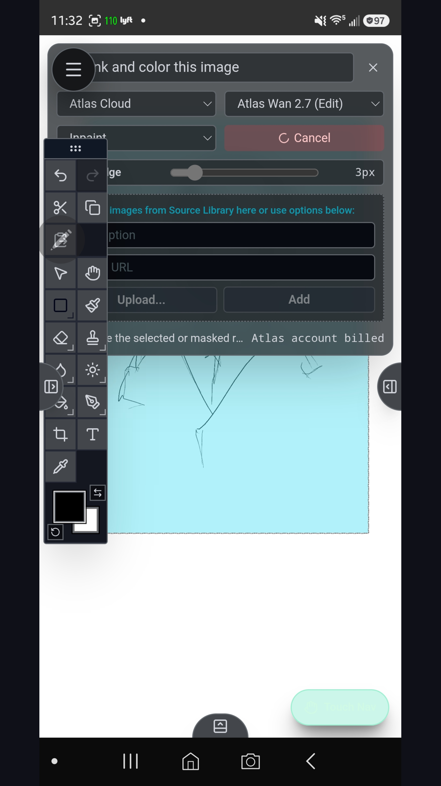
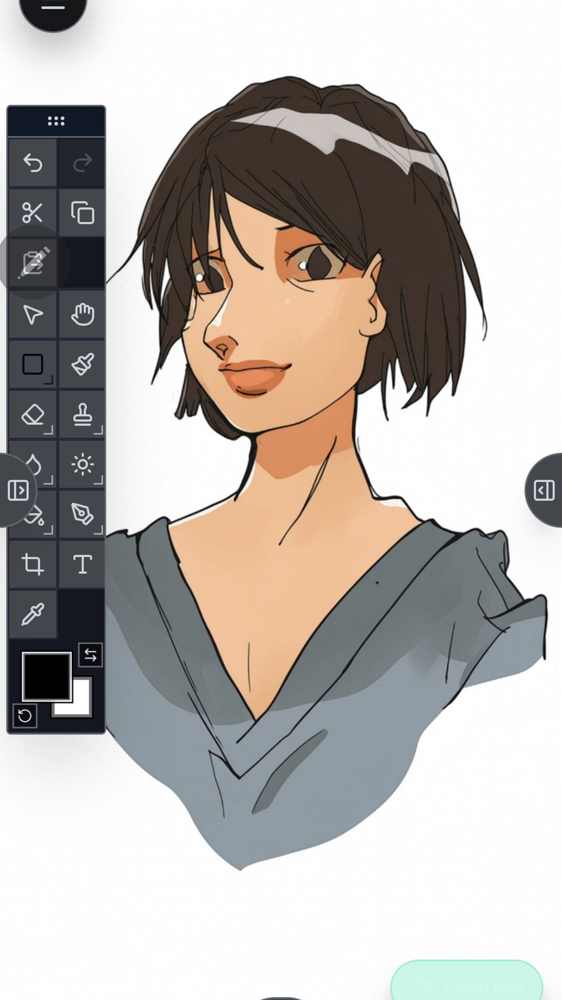
One project, two screens, live
Turn on the LAN host and your phone serves the full desktop interface to any browser on your network. It's the same project, syncing both ways — and a one-tap Working here ⇄ Phone baton hands the edit lock between devices so the two screens never collide.
Pair an Xbox, PlayStation, or generic pad over Bluetooth and drive the studio with physical buttons and sticks — fully remappable per workspace. Scrub keyframes in Video, drop frames in Paper, switch tools in Image. See the bindings →
One price. Yours forever.
A perpetual license — no subscription, no in-app purchases, no ads. Signal Loom doesn't include model usage; you bring your own provider keys and pay them directly for what you use.
- All four workspaces — Flow, Image, Paper, Video — each a full tool on its own
- One .sloom project + shared source library
- Bring-your-own-key for every provider — or use no AI at all
- Android, Samsung DeX, and the LAN desktop host
- Buy once. No subscription, no ads, no account.
📱 Android is coming to the Samsung Galaxy Store & Google Play — the trusted way to install, no sideloading.
PKG · studio.sloom.signalloom
Signal Loom does not include AI usage or credits. You supply your own provider accounts/keys, and any model usage is billed to you by that provider under their terms.
Signal Loom is source-available under a noncommercial license. Prefer to build it yourself, or want to read exactly what the code does with your keys? It's all on GitHub — no judgment. Now in the 0.9.x beta; see the changelog for what's new.